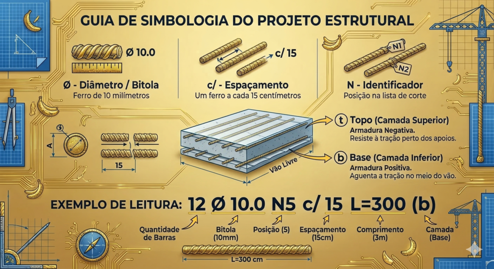
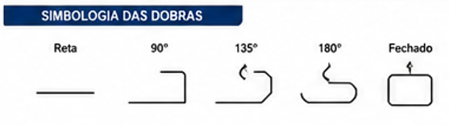

Como ler a anotação "N1 ø 10.0 c/ 15 L=200"?
N1 é o número da barra 1 na tabela; ø 10.0 é uma barra de 10 mm de grossura; c/ 15 é o espaço de 15 cm entre uma barra e outra; L=200 é o comprimento da barra esticada, de 200 cm, antes de dobrar.
- N (número da barra): identifica qual barra é essa na tabela de corte.
- ø (diâmetro/bitola): a grossura do ferro, em milímetros.
- c/ (espaçamento): a distância entre um ferro e o próximo (ex.: c/ 20 cm).
- L (comprimento total): o tamanho da barra esticada, antes de ser dobrada.

Quais bitolas de ferro são mais comuns em obras residenciais?
As bitolas seguem tamanhos padrão de mercado. As mais comuns em casas são 5,0 mm, 6,3 mm, 8,0 mm, 10,0 mm e 12,5 mm.
Que outros símbolos aparecem no desenho?
Além de N, ø, c/ e L, o desenho costuma usar (t) para dizer que a barra fica em cima (topo) e (b) para dizer que ela fica embaixo (base).
Tabela rápida de símbolos
| Símbolo | O que significa | Exemplo |
|---|---|---|
| ø | Grossura da barra (diâmetro) | ø 10.0 (ferro de 10 milímetros) |
| c/ | Espaço entre as barras | c/ 15 (um ferro a cada 15 centímetros) |
| N | Número da barra | N1, N2 (posição na lista de corte) |
| (t) | Fica em cima (topo) | Armadura superior da viga ou sapata |
| (b) | Fica embaixo (base) | Armadura inferior da viga ou sapata |
Como identificar o tipo de dobra no desenho?
O detalhamento representa cada dobra por um símbolo simples: reta (sem dobra), 90°, 135°, 180° ou fechado (quando as duas pontas se encontram, como no estribo).

Dúvidas frequentes
O que significa a marcação N1 no projeto?
O "N" é o número da barra na lista de corte. Com esse número, o armador olha a tabela e descobre o comprimento e a dobra exata que precisa fazer antes de montar.
O que o símbolo "c/15" quer dizer na prática?
Quer dizer "a cada 15 centímetros" — é a distância entre o centro de uma barra e o centro da próxima.